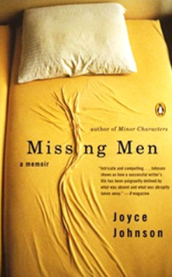

The translation of Baudelaire's magnum opus perhaps the most
powerful and influential book of verse from the 19th cntury, won
the American Book Award for thid is one of Richard Howard's
greatest efforts.

Missing Men
Joyce Johnson
Joyce Johnson's classic memoir of growing up female in the
1950s, Minor Characters, was one of the initiators of an
important new genre the personal story of a minor player on
history's stage. In Missing Men, a memoir that.